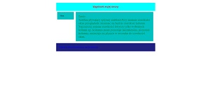
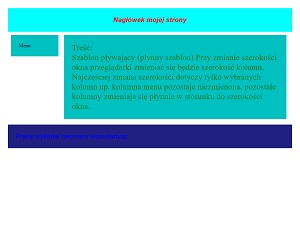

KOD HTML
<!DOCTYPE html> <html> <head> <meta charset="UTF-8"> <style type="text/css"> /* początek def. CSS */ * { margin: 0px; padding: 0px;} /* zerowanie styli */ div {overflow: hidden; padding: 25px; } /* overflow: hidden --> ukrywanie tekstu wychodzącego poza granice elementu */ /* padding: 25px; --> odstęp między ramką a contentem*/ #ramka { /* definicja elementu ID o nazwie ramka*/ margin-right: auto; /* auto --> automatyczne odstęp między całą stroną a ramką*/ margin-left: auto; min-width: 400px; /* minimalna szer strony-->400px */ max-width: 900px; /* maksymalna szer strony-->900px */ } #naglowek { background-color: #00FFFF; /* kolor tła w HEX na #FCF; */ font-size:16pt; /* wielkość czcionki na 16 na jaka tu jest jednostka-wpisz */ color:red; /* kolor liter czerwony */ font-family: Arial; /* rodzina czcionek Arial */ font-style: italic; /* styl czcionki italic */ text-align: center; /* Wycentrowanie tekstu */ font-weight:bold; /* Pogrubienie liter */ } #stopka { background-color: #191970; font-size:16pt; color:blue; font-family: Arial; font-style: italic; clear:both; /* clear-przyleganie elementów, both-oba*/ } .kolumny {/*definicja elementu .kulumny znaczy że kolumny to id a nie class (jest kropka i co to znaczy)*/ margin-top: 10px; /*odstęp 10px od góry między ramką a całą stroną*/ margin-right: 2%; /*odstęp 2% od prawej między ramką a całą stroną*/ margin-bottom: 2%; /* odstęp 2px od dołu między ramką a całą stroną*/ margin-left: 10px; /*odstęp 10px od lewej między ramką a całą stroną */ background-color: #00BFFF; } #kol1 { float: left; /* powoduje, że następne elementy strony ustawiają się tak, że istniejące elemnty strony będą po lewej stronie nowych elementów strony*/ width:100px; } #kol2 { color: green; font-size: 0.7cm; } #menu_prawe_dolny{ background-color: #00CED1; color:red; font-size: 0.5cm; } /* koniec def. CSS<--*/</style> </head> <body> <div id="ramka"> <div id="naglowek">Nagłówek mojej strony </div> <div class="kolumny" id="kol1"><p>Menu</p> </div> <div class="kolumny" id="kol2"><p> Treść:<br> Szablon pływający (płynny szablon) Przy zmianie szerokości okna przeglądarki zmieniać się będzie szerokość kolumn. Najczęściej zmiana szerokości dotyczy tylko wybranych kolumn np. kolumna menu pozostaje niezmienona, pozostałe kolumny zmieniaja się płynnie w stosunku do szerokości okna.</p>   </div> <div id="stopka">Pracę wykonał nieznany woluntariusz</div> <div id="menu_prawe_dolny">Dolny</div> </div> </body> </html> <!-- Łukasz Dolny -->